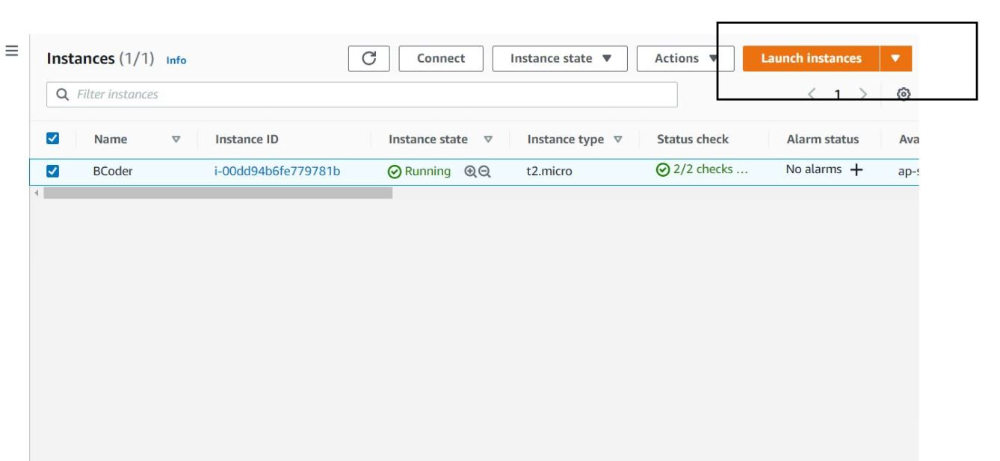
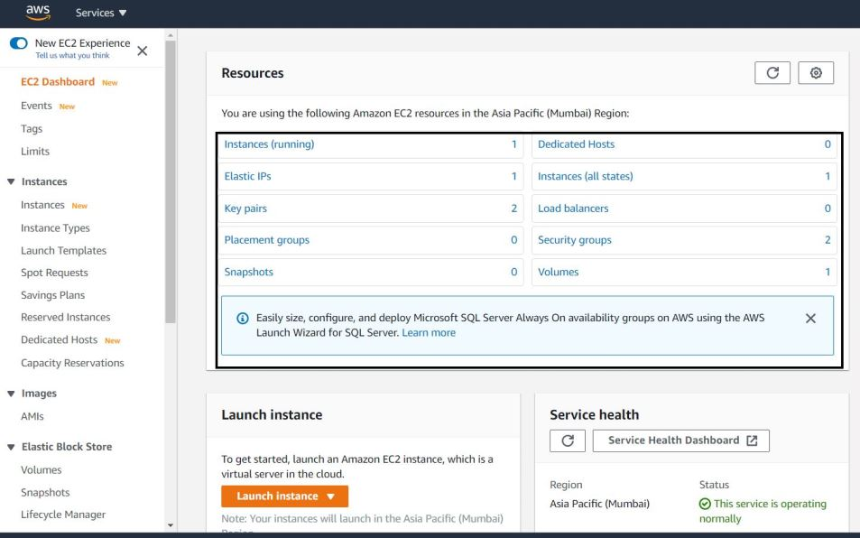
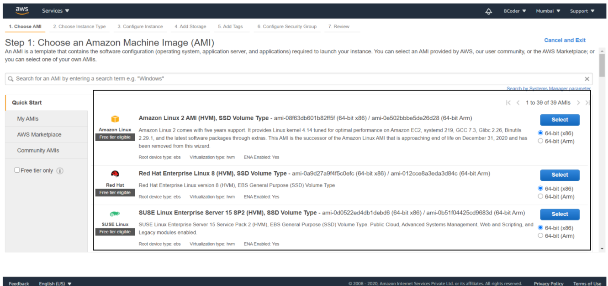
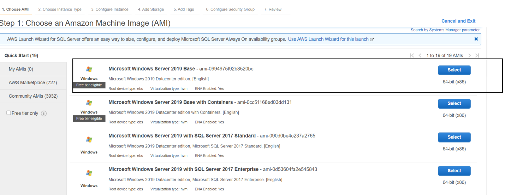
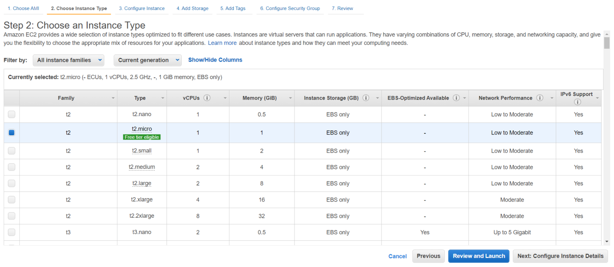
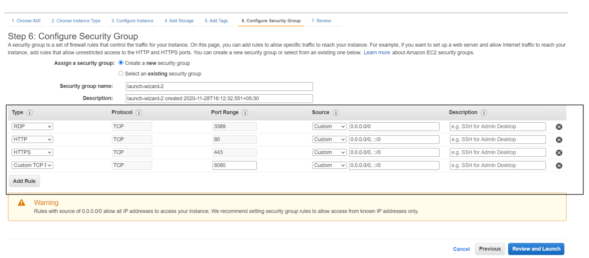
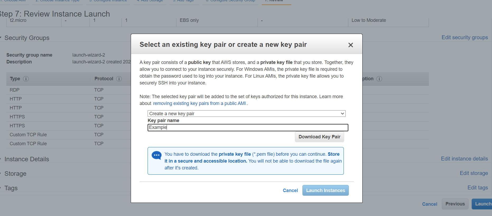
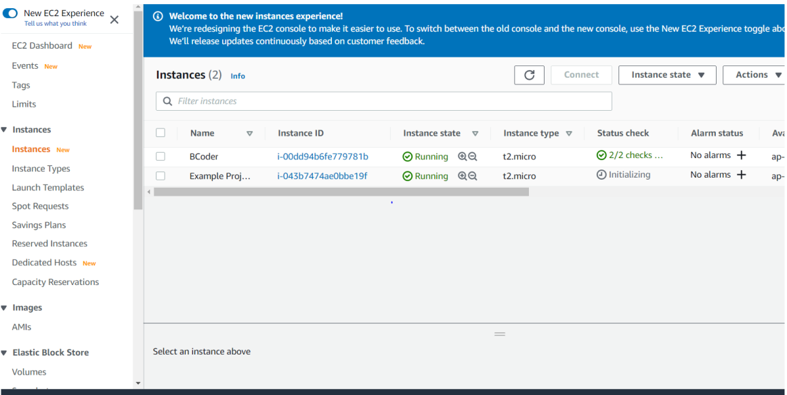

Getting started with AWS EC2 (Basics). How to create Instances?
AWS EC2(Elastic Cloud Compute) is a web service which allows users to create virtual machines also known as Instances on Amazon Web Server. Using AWS EC2 to deploy your project is a very good strategy as it allows small startups to deploy in a cost effective way as well as large businesses to scale whenever needed.
To understand AWS EC2 we need to first understand how are virtual machines i.e Instances created on Amazon Web Server which we call cloud.Basically Amazon has their datacenters which has physical servers.Now when we pay for AWS EC2 or use free tier we get part of it to create instances using which we can deploy projects.
Let's get to the Dashboard and check how it works.

The highlighted section contains the main components with which the user can create instances.In this post we will just look into Instances component section and see how to configure and launch an instance.
Instances:It contains all the instances currently present in your AWS EC2
To create a new instance simply click on Launch Instance button and follow the steps.

Once you Click on Launch instance you need to select whichever AMI(Amazon Machine Image) you prefer,its just the machine in which your project is going to run on.

For Example I will be selecting Windows Server 2019 here.

Once you select the server type you get to choose CPU capacity and other network configuration,here I simply choose the free tier.

Just press next until you reach Step 6(Configure Security Group)
Note:If you have created IAM user then you can choose IAM Role while configuring instance in Step 3.Its not mandatory.
In Step 6 you need to add type of connections which can access your instance.
Here I added HTTP ,HTTPS , and a Custom TCP at port 8080 saying 'hey allow this type of network traffic to access my instance'
RDP is by default present when you select a Windows Server.
If you are using a Linux based server you have SSH by default.
Now just click on Launch where you will be asked to create a new key value pair.This is used to decrypt your password when you connect to the instance.Keep the downloaded file safely.It is required each time when you connect to your instance.
Click on Launch Instance.

Here we go,we have succesfully created our first Instance -Example Project.
